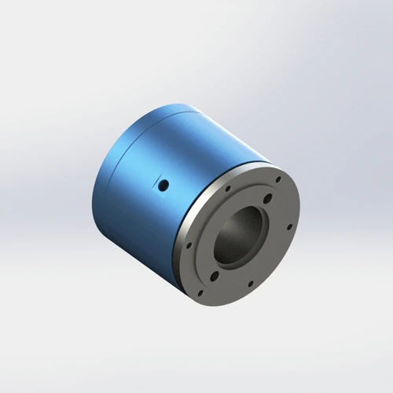

Steel equipment, powder handling, dusty packaging lines, and harsh industrial machines need protected pneumatic rotary joints that resist abrasive contamination, vibration, and early leakage.
In steel plants and dusty production areas, rotary joints fail early when dust enters the seal or bearing area. The operating environment matters as much as pressure and RPM.
For harsh applications, selection should include dust protection, body material, seal type, hose support, installation angle, and maintenance access. A standard open design may work on a clean bench but fail quickly near powder, scale, chips, or smelting dust.

Typical requirementProtected rotary union design for dusty, abrasive, or vibration-heavy equipment.Identify whether the dust is powder, metal scale, abrasive chips, cement dust, packaging powder, or general airborne contamination.
Use proper anti-rotation support and hose routing. Side load can shorten seal life even when pressure and RPM are within range.
Harsh environments benefit from models that are easier to inspect, replace, and protect from external contamination.
| Environment | Common Risk | Selection Focus | Begapunk Direction |
|---|---|---|---|
| Steel equipment | Scale, vibration, heat nearby | Protected body, robust mounting, hose support | Dust-proof or custom protected rotary union |
| Powder packaging line | Fine dust near seal area | Dust protection, clean air, simple maintenance | BP-2P-50-0001 or protected custom model |
| Heavy-duty machinery | Shock, side load, contamination | Flange mount, stable anti-rotation, material review | BP-2P-95, BP-2P-130, custom |
Send the machine photos, old part dimensions, dust type, pressure, RPM, and mounting details. Begapunk can review whether a dust-proof or custom protected design is needed.
No. Dust-proof design focuses on preventing particles from entering sensitive areas. Water exposure, washdown, or coolant splash should be reviewed separately.
Yes. Clear photos, measurements, port information, and operating conditions are often enough for a first review.